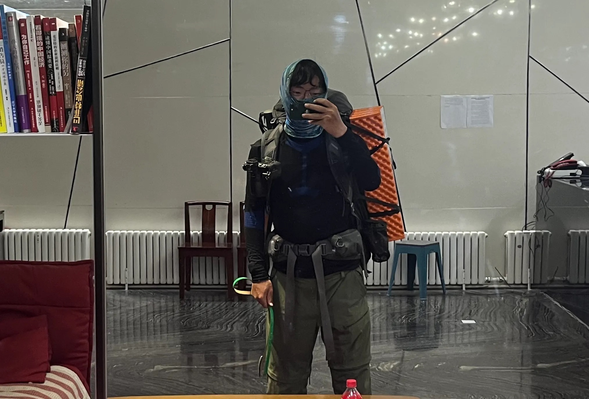
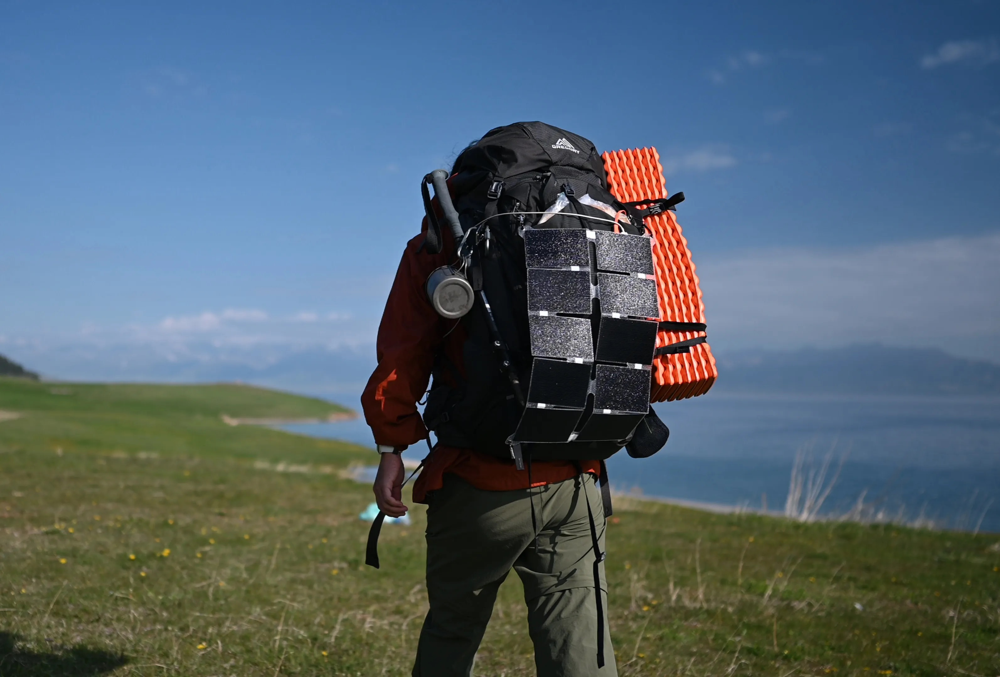
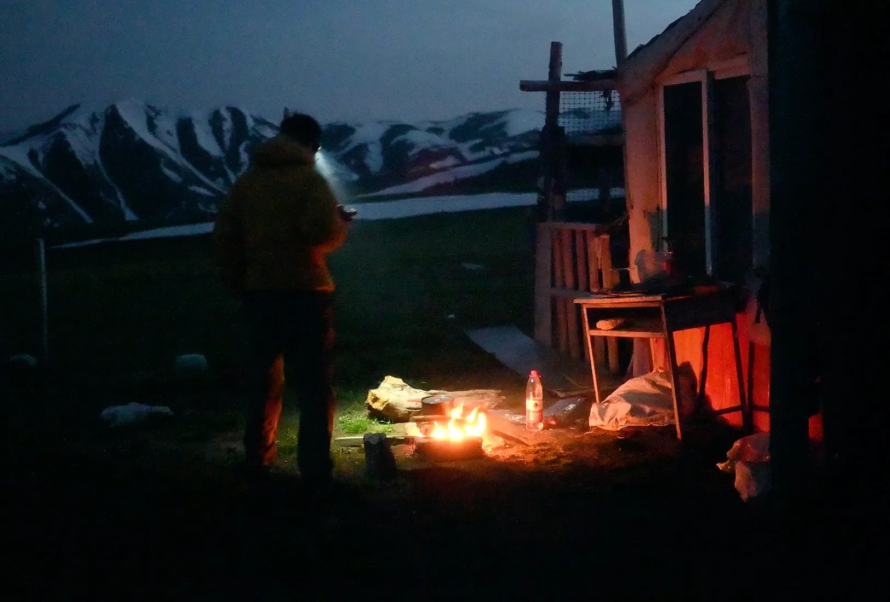
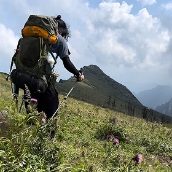
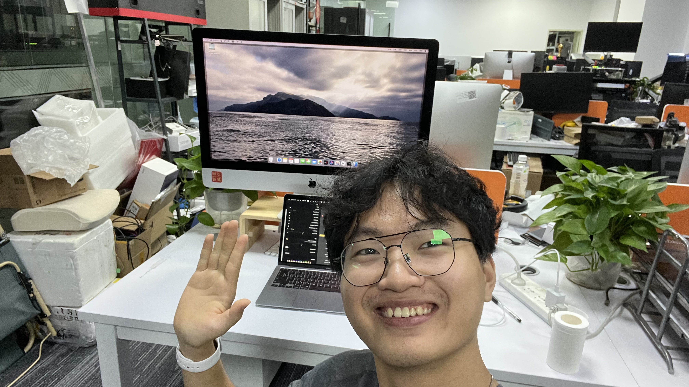

#最后更新时间:@2024年04月05日
Hi！我叫李忠平，欢迎您光临我的博客！这个博客项目源自我的各项兴趣爱好，包含业余无线电、户外背包徒步露营、摄影、骑行、博客内更新的内容将涵盖有关它们的一切。因为想要成为多语言者、FPV飞手、计算机专家，所以也会尝试更新这几个方向的内容。
请不要在您不能控制的场合提及本站。
在生活中我是一名普通的上班族，梦想着能够成为像@SEANBAGSHAW@超级流浪师这样有钱又闲的自然/户外摄影师，不过我2022年才开始接触摄影，未来还有很多事物需要探索学习。在这之前，我在科技自媒体@ZEALER 担任MCN运营，然后就职户外品牌@Garmin佳明，任职社媒运营。我很幸运能在科技领域媒体和户外领域的企业工作，它们给我带来了技能、资金和资源积累。
我热衷于记录，并参加了《365Days*1sPlan》这个计划，它最初由一位YouTuber创立，要求参与者坚持每天打开相机至少录制一秒，或者完成一张自拍，一年后将这些片段拼接成一个365秒的视频。你应该看过那些每天以相同角度坚持自拍一张照片然后制作成一年以来变化的视频。我也想成为这其中之一。欢迎您查看我2021-2023年参加的《365Days*1s Plan》计划:《2021》《2022》《2023》...请注意，视频制作得非常稚嫩:(
我于1998年4月12日出生在四川南充，14岁离开四川，在深圳生活了10几年时间，目前长居在浙江省杭州市。我认为我一直是一个热衷寻求冒险和新奇体验的人，我非常喜欢户外，特别是背包徒步户外露营，我曾在2022年独自背包徒步秦岭高山草甸-秦岭光头山-鹿角梁，2023年独自徒步赛里木湖-托乎拉苏。这些户外活动给我提供了此前生活中从未有过的的体验，让我走出生活中原本琐碎的事物。欢迎查看我的户外计划《🗒️零｜单车旅行，深圳至汕头》《ARD️一｜秦岭鹿角梁3日徒步》《ARD️二｜三次登顶罗浮山》《ARD️三｜赛里木湖至托乎拉苏徒步》《ARD️四｜河源大峡谷露营溯溪》···
很遗憾..我还没能制作出令人满意或价值很高的作品，直到现在，我还没能把我投入进这项爱好的资金回本，但梦想和热爱驱动着我，乐此不疲。欢迎前往首页查看我拍摄的作品。那些“作品欢迎来自任何人的评论、批评和建设性交流，并且我会由衷地感谢愿意为此付出精力的朋友，我认为那是难得和幸运的。




工作经历
Garmin 佳明 - 内容运营
2023 - 2024ZEALER MCN - MCN 运营管理
2023ZEALER MCN - 市场部运营专员
2022深圳市星恋文化传媒有限公司 - KOL 经纪人
2021QQ 音乐外包 - 达人运营
2019 - 2021